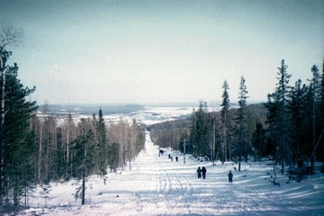
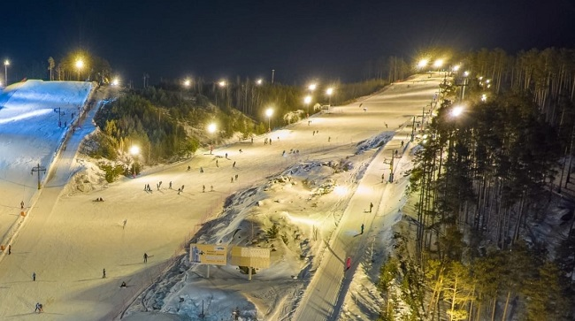

.jpg)
Снежный барс (гора Воронина)
Гора находится возле города Михайловска Свердловской области, в местности, которую нередко называют «Уральской Швейцарией». Гора Воронина – это живописные пейзажи, толстый слой снега, пихтовые и еловые леса, чистейший воздух и широкие возможности для активного отдыха. Неподалеку от горнолыжного центра находится парк «Оленьи ручьи». Сезон c декабря по апрель.

Качканар
Размещается он на склоне горы, которая служит границей между Средним и Северным Уралом. Сезон с декабря по апрель. 3 горнолыжные трассы, суммарная длина которых составляет 7 км. Эта трасса отличается от других своей живописностью, поскольку окружена сказочным густым лесом. Есть трассы с искусственным освещением. Сноуборд-парк с хаф-пайпом.

Гора Пильная
Гора Пильная — главная вершина хребта Пильных гор, отделившая уютную деревушку с одноименным названием от города Первоуральска и надежно укрывающая от западных ветров горнолыжные трассы. Северное расположение склонов благоприятствует более раннему открытию и большой продолжительности зимних сезонов из года в год. Сезон c декабря по апрель.

Уктус
Горнолыжный комплекс находится в черте Екатеринбурга, сюда регулярно ходит общественный транспорт, а трассы хорошо освещаются в любое время суток. Сезон c декабря по апрель. 4 трассы общей протяженностью 4 км с перепадами высот 100 м. Горнолыжный комплекс расположен в черте города, с одной стороны, до него легко добраться, с другой — всегда много народу.
.jpg)
«Happy Life» (Флюс)
Горнолыжный центр расположен на берегу Волчихинского водохранилища, неподалеку от ГЛЦ «Волчиха». Интересное место как для новичков, так и для профессионалов, любимое многими лыжниками и сноубордистами. «Флюс» появился в 70-г гг. XX века благодаря фанатам, которые были увлечены экзотическим для советского периода спортом. Сезон с декабря по апрель.

Воронинские горки
Горнолыжный центр «Воронинские горки» располагается в черте города Тюмени на живописном берегу реки Тура. Сезон с декабря по апрель. 3 трассы протяжностью примерно 1000 м с перепадом высот до 50 м. Есть трасса для катания на тюбингах. Подъемники 3 подъемника бугельного типа, бэби-лифт. Центр расположен в черте города, соответственно, всегда много народу. Возможны очереди на подъемник и на прокат оборудования.
Снежный барс (гора Воронина)
Гора находится возле города Михайловска Свердловской области, в местности, которую нередко называют «Уральской Швейцарией». Гора Воронина – это живописные пейзажи, толстый слой снега, пихтовые и еловые леса, чистейший воздух и широкие возможности для активного отдыха. Неподалеку от горнолыжного центра находится парк «Оленьи ручьи». Сезон c декабря по апрель.
Снежный барс (гора Воронина)
Гора находится возле города Михайловска Свердловской области, в местности, которую нередко называют «Уральской Швейцарией». Гора Воронина – это живописные пейзажи, толстый слой снега, пихтовые и еловые леса, чистейший воздух и широкие возможности для активного отдыха. Неподалеку от горнолыжного центра находится парк «Оленьи ручьи». Сезон c декабря по апрель.
Снежный барс (гора Воронина)
Гора находится возле города Михайловска Свердловской области, в местности, которую нередко называют «Уральской Швейцарией». Гора Воронина – это живописные пейзажи, толстый слой снега, пихтовые и еловые леса, чистейший воздух и широкие возможности для активного отдыха. Неподалеку от горнолыжного центра находится парк «Оленьи ручьи». Сезон c декабря по апрель.